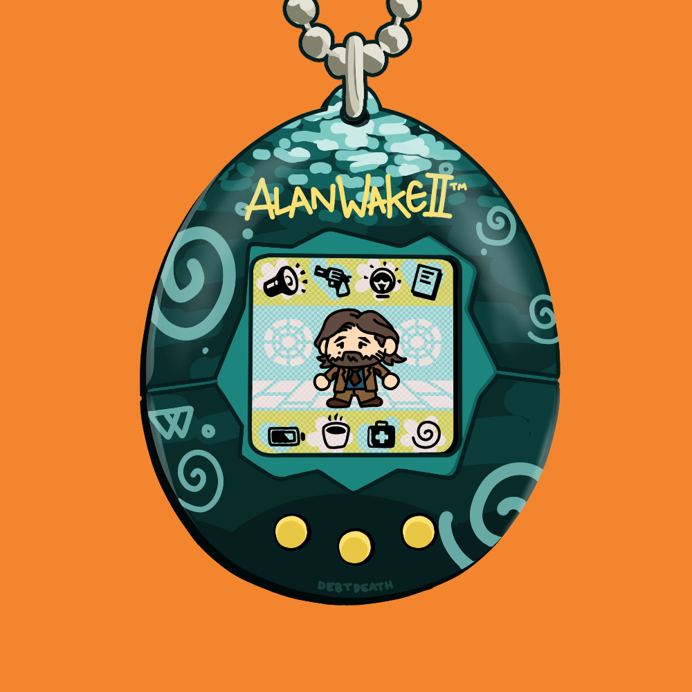
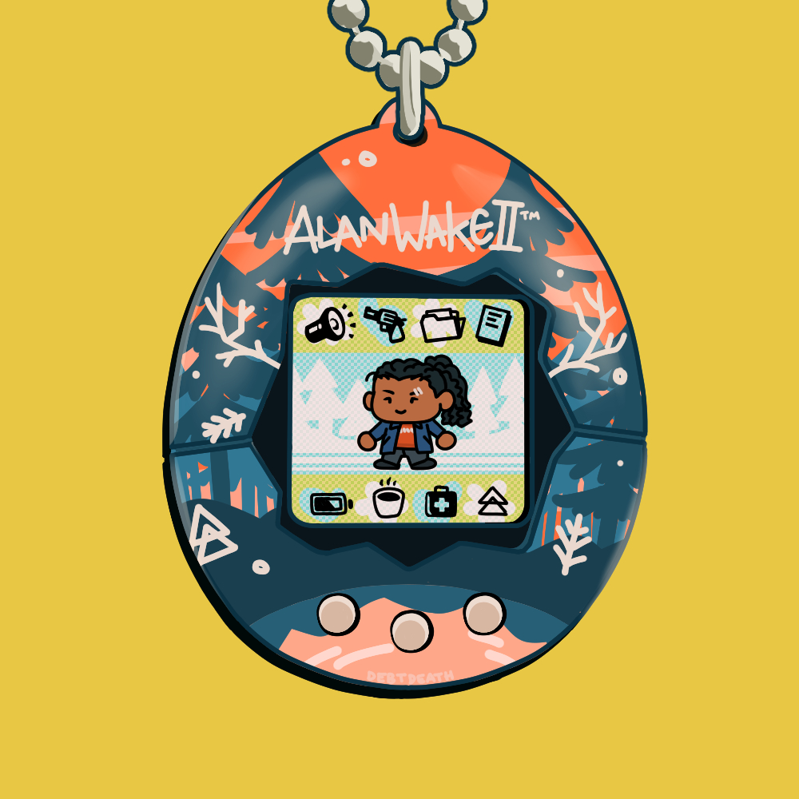
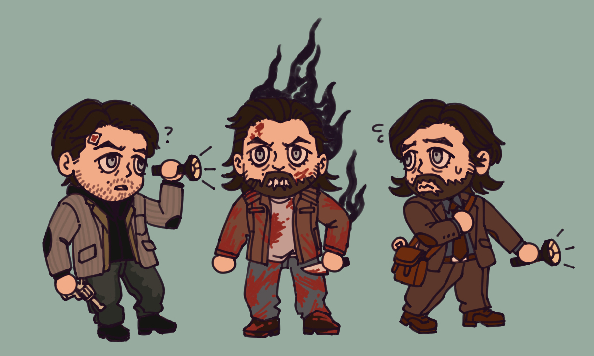
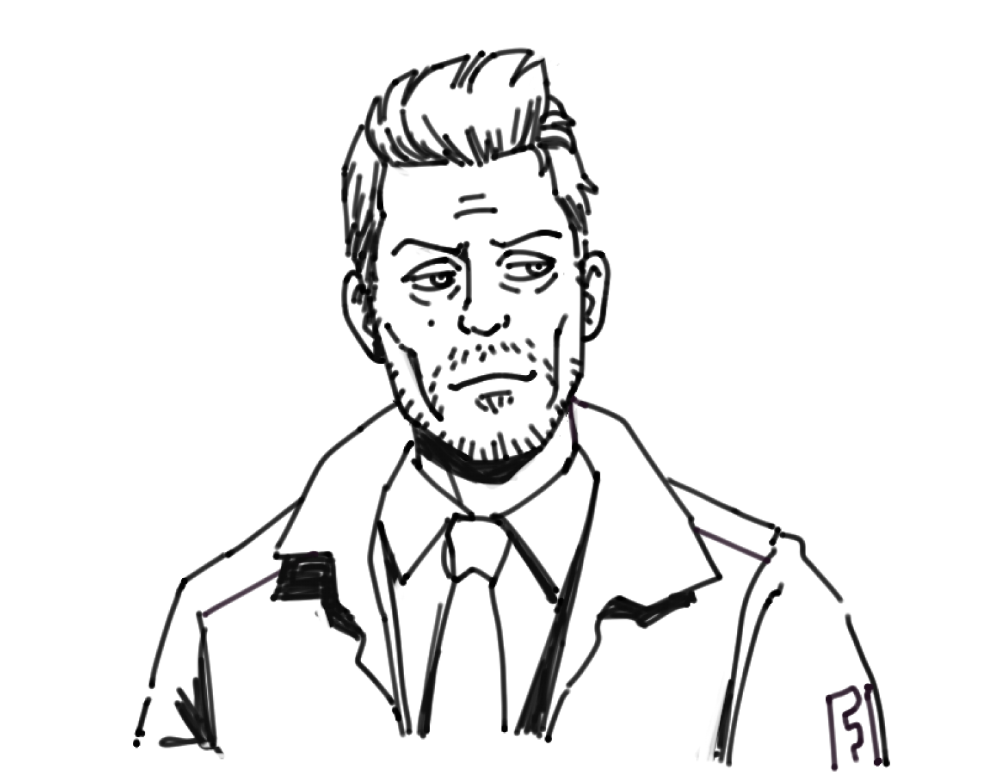
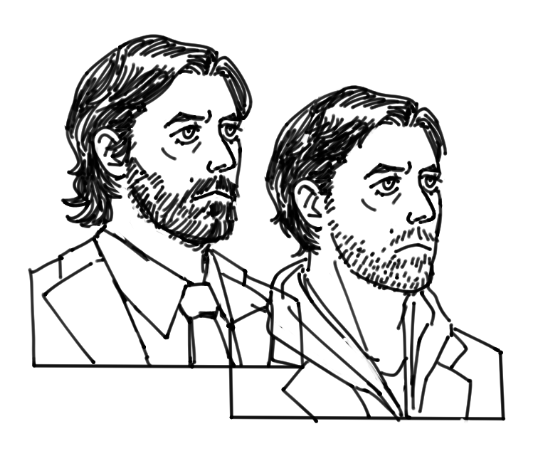

Alan Wake / Remedy gallery
I've been having fun learning how to draw various characters from Alan Wake! I need to draw more Rose... and Ilmo & Jaakko... and Saga... and Barry and Alice ohhhhh they made too many good characters that I love. How dare they!
This gallery also features guest appearances by Albert Wesker and Ada Wong from the Resident Evil series. Don't ask... (it's the initials).
2024




